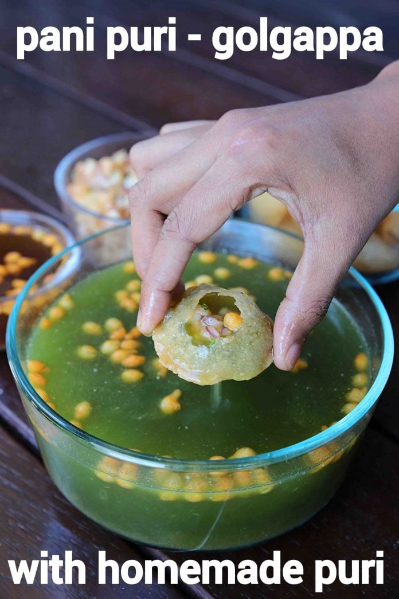

Gol Gappe
- Description
Also known as "Pani Puri", this is one of the most popular Indian street food.
So popular that, if you've visted Delhi already and haven't tasted yet, you're missing out one of our real
things. :')

Curious how it tastes like (or maybe dying to enjoy it again)? Here's a recipe!
- Ingredients
For Puri
For teekha pani
- Half Cup Mint/ Pudina
- 1 Cup Coriander
- 2 inch Ginger
- 4 Chilli
- Small Ball Sized Tamarind
- 2 Tsp Chaat Masala
- 2 Tsp cumin power
- Pinch hing// asafoetida
- One and half tablespoon salt
- 8 cup of cold water
For Khatta Meetha Pani
- 2 Cup tamarind extract
- 6 Tablespoon jaggery/ gud
- 2 tablespoond Masala
- 2 tablespoon cumin powder
- Half tablespoon pepper powder
- Half tablespoon kashmiri red chilli powder
- Pinch hing/ asafoetida
- One and half tablespoon of salt
- 6 cups of cold water
For aloo Stuffing
- 6 potatoes/ aloo (boiled and mashed)
- 1 onion (finely chopped)
- 4 tablespoon of coriander (finely chopped)
- 1 tablespoon of cumin powder
- 0.5 tablespoon of pepper powder
- 1 tablespoon of chat masaala
- 1 tablespoon of kashmiri red chilli powder
- 1 tablespoon of salt
- Recipe :
Puri making :
- Firstly, in a large bowl take 1 cup rava and 2 tbsp maida.
- Add 3 tbsp oil, crumble and mix well making sure the rava turns moist.
- Now add ¼ cup hot water and start to knead.
- Knead for 5 to 8 minutes or until the dough is formed.
- Sprinkle water as required and knead to a smooth and soft dough.
- Cover the dough and rest for 20 minutes.
- After 20 minutes, continue to knead for 2 more minutes.
- Now pinch a very small ball sized dough.
- Roll and flatten into small disk making sure it is thin.
- Deep fry in hot oil, do not overcrowd the oil.
- Flip over once the puri puffs up.
- Fry on medium flame until it turns golden brown and crisp from both the sides.
- Drain off over kitchen paper to get rid off excess oil.
- Puri is ready for pani puri. once cooled completely, you can store in an airtight container and use it
for a week.
Teekha Paani preparation :
- Firstly, in a small blender take ¼ cup mint, ½ cup coriander, 1 inch ginger, 2 chilli and small ball
sized tamarind.
- Blend to smooth paste adding water as required.
- Transfer theeka pani puri paste into a large bowl.
- Add 1 tsp chaat masala, 1 tsp cumin powder, pinch hing, ¾ tsp salt and 4 cup cold water.
- Mix well and theeka pani is ready to enjoy with golgappa.
Khatta Meetha Pani preparation :
- Firstly in a large bowl take 1 cup tamarind extract and 3 tbsp jaggery.
- Also add 1 tablespoon chat masala, 1 tablespoon cumin powder, 1/4 table spoon of pepper
- Mix well and khatta meetha pani is ready to enjoy with gol gappa.
Aloo stuffing preparation :
- Firstly, in a small bowl take 3 potato, ½ onion and 2 tbsp coriander.
- Also add ½ tsp cumin powder, ½ tsp chaat masala, ¼ tsp pepper powder, ½ tsp chilli powder and ½ tsp
salt.
- Mix well making sure everything is well combined.
- Aloo stuffing is ready to enjoy with puchka.
Assembling pani puri for serving :
- Firstly, just before serving add handful of boondi to theeka pani and khatta meetha pani.
- Make a small hole in centre of puri.
- Stuff a tsp of prepared aloo stuffing into puri.
- Dip into theeka pani or khatta meetha pani and enjoy.
- Finally, pani puri recipe is ready to serve.
Woah, that was a pretty long recipe we had here didn't we? :')
Anyways, thanks to the source : Hebbars Kitchen for helping me out with the recipe here ('cause I didn't know how to either ;-;)